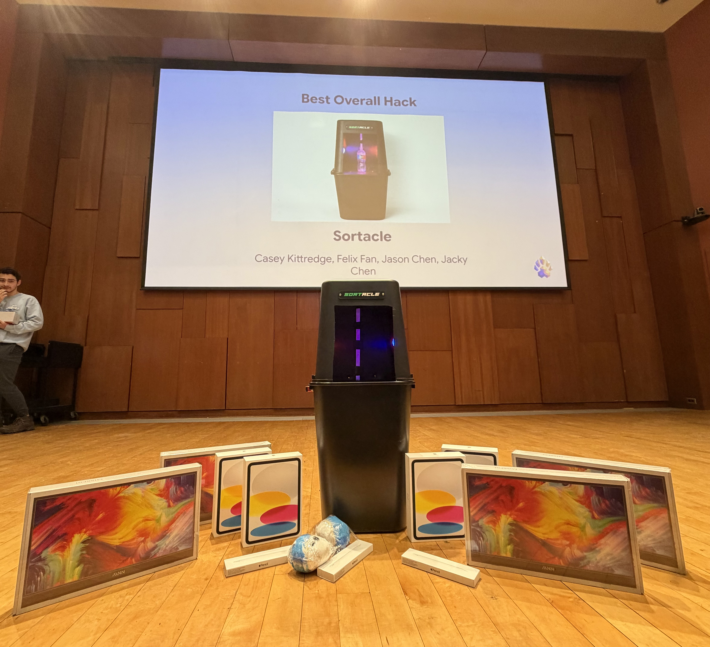

Sortacle
AI-powered waste bin that identifies and routes items in real time using cloud computer vision and a servo-driven sorting platform.
Project Breakdown
- Designed the sorting tray, camera mount, motor mounts, and bearing interfaces in CAD, iterating through 6+ mechanical revisions
- Fabricated all custom components via in-house FDM 3D printing and assembled the complete mechatronic system
- Integrated a Raspberry Pi camera for on-device image capture and managed data flow to a remote inference service
- Implemented a cloud-based computer vision pipeline using YOLO-World served through a FastAPI endpoint
- Developed a servo-driven actuation system to route classified objects with repeatable and deterministic motion
- Validated system performance through live demonstrations, earning Best Overall Project at Hack@Brown 2026
Technical Stack
- SolidWorks (CAD & Sheet Metal)
- Bambu Lab FDM 3D Printing
- Raspberry Pi 4
- PCA9685 Servo Control
- Motors & Sensors
- Python
- OpenCV
- YOLO-World (Ultralytics)
- FastAPI (Cloud Inference)
- Vultr (Deployment)
References

Best Overall Project — Hack@Brown 2026